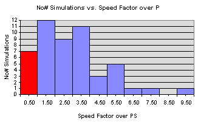

Based on an internal benchmark using the MCNC benchmark suite of circuits (available at http://ftp.cbl.ncsu.edu/www/CBL_Docs/csim90.html), among the circuits that converged, VBASE simulated 86.8% of the benchmark circuits faster than PSpice. VBASE simulated circuits up to 10 times faster than PSpice.
